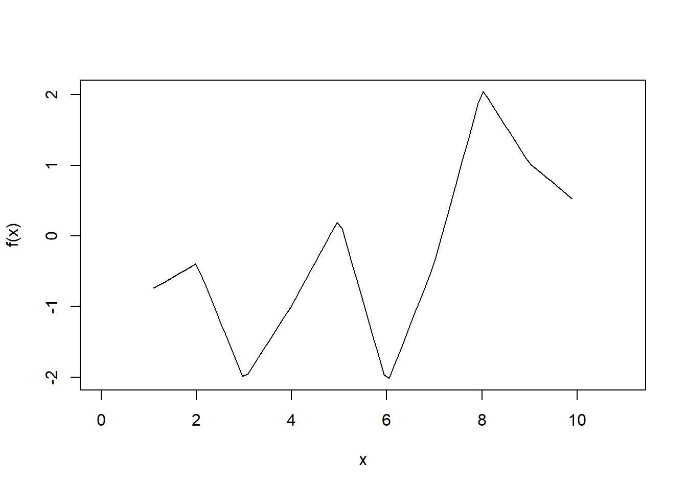

Chapter 10 Function factories
Attaching the needed libraries:
library(rlang, warn.conflicts = FALSE)
library(ggplot2, warn.conflicts = FALSE)10.0.1 Exercises 10.2.6
Q1. The definition of force() is simple:
force
#> function (x)
#> x
#> <bytecode: 0x14a8f2708>
#> <environment: namespace:base>Why is it better to force(x) instead of just x?
A1. Because of lazy evaluation, argument to a function won’t be evaluated until its value is needed, but sometimes we may want to have eager evaluation.
Using force() makes this intent clearer.
Q2. Base R contains two function factories, approxfun() and ecdf(). Read their documentation and experiment to figure out what the functions do and what they return.
A2. About the two function factories-
approxfun()
This function factory returns a function performing the linear (or constant) interpolation.
x <- 1:10
y <- rnorm(10)
f <- approxfun(x, y)
f
#> function (v)
#> .approxfun(x, y, v, method, yleft, yright, f, na.rm)
#> <bytecode: 0x11c2ff3c0>
#> <environment: 0x11c2fea90>
f(x)
#> [1] -0.7786629 -0.3894764 -2.0337983 -0.9823731 0.2478901
#> [6] -2.1038646 -0.3814180 2.0749198 1.0271384 0.4730142
curve(f(x), 0, 11)
ecdf()
This function factory computes an empirical cumulative distribution function.
x <- rnorm(12)
f <- ecdf(x)
f
#> Empirical CDF
#> Call: ecdf(x)
#> x[1:12] = -1.8793, -1.3221, -1.2392, ..., 1.1604, 1.7956
f(seq(-2, 2, by = 0.1))
#> [1] 0.00000000 0.00000000 0.08333333 0.08333333 0.08333333
#> [6] 0.08333333 0.08333333 0.16666667 0.25000000 0.25000000
#> [11] 0.33333333 0.33333333 0.33333333 0.41666667 0.41666667
#> [16] 0.41666667 0.41666667 0.50000000 0.58333333 0.58333333
#> [21] 0.66666667 0.75000000 0.75000000 0.75000000 0.75000000
#> [26] 0.75000000 0.75000000 0.75000000 0.75000000 0.83333333
#> [31] 0.83333333 0.83333333 0.91666667 0.91666667 0.91666667
#> [36] 0.91666667 0.91666667 0.91666667 1.00000000 1.00000000
#> [41] 1.00000000Q3. Create a function pick() that takes an index, i, as an argument and returns a function with an argument x that subsets x with i.
pick(1)(x)
# should be equivalent to
x[[1]]
lapply(mtcars, pick(5))
# should be equivalent to
lapply(mtcars, function(x) x[[5]])A3. The desired function:
pick <- function(i) {
force(i)
function(x) x[[i]]
}Testing it with specified test cases:
x <- list("a", "b", "c")
identical(x[[1]], pick(1)(x))
#> [1] TRUE
identical(
lapply(mtcars, pick(5)),
lapply(mtcars, function(x) x[[5]])
)
#> [1] TRUEQ4. Create a function that creates functions that compute the ith central moment of a numeric vector. You can test it by running the following code:
m1 <- moment(1)
m2 <- moment(2)
x <- runif(100)
stopifnot(all.equal(m1(x), 0))
stopifnot(all.equal(m2(x), var(x) * 99 / 100))A4. The following function satisfied the specified requirements:
moment <- function(k) {
force(k)
function(x) (sum((x - mean(x))^k)) / length(x)
}Testing it with specified test cases:
m1 <- moment(1)
m2 <- moment(2)
x <- runif(100)
stopifnot(all.equal(m1(x), 0))
stopifnot(all.equal(m2(x), var(x) * 99 / 100))Q5. What happens if you don’t use a closure? Make predictions, then verify with the code below.
i <- 0
new_counter2 <- function() {
i <<- i + 1
i
}A5. In case closures are not used, the counts are stored in the global variable, which can be modified by other processes or even deleted.
new_counter2()
#> [1] 1
new_counter2()
#> [1] 2
new_counter2()
#> [1] 3
i <- 20
new_counter2()
#> [1] 21Q6. What happens if you use <- instead of <<-? Make predictions, then verify with the code below.
new_counter3 <- function() {
i <- 0
function() {
i <- i + 1
i
}
}A6. In this case, the function will always return 1.
new_counter3()
#> function() {
#> i <- i + 1
#> i
#> }
#> <environment: 0x13b68ffb0>
new_counter3()
#> function() {
#> i <- i + 1
#> i
#> }
#> <bytecode: 0x13b2556e0>
#> <environment: 0x13af436c0>10.0.2 Exercises 10.3.4
Q1. Compare and contrast ggplot2::label_bquote() with scales::number_format().
A1. To compare and contrast, let’s first look at the source code for these functions:
ggplot2::label_bquote
#> function (rows = NULL, cols = NULL, default)
#> {
#> cols_quoted <- substitute(cols)
#> rows_quoted <- substitute(rows)
#> has_warned <- FALSE
#> call_env <- env_parent()
#> fun <- function(labels) {
#> quoted <- resolve_labeller(rows_quoted, cols_quoted,
#> labels)
#> if (is.null(quoted)) {
#> return(label_value(labels))
#> }
#> evaluate <- function(...) {
#> params <- list(...)
#> if ("x" %in% find_names(quoted) && !"x" %in% names(params)) {
#> if (!has_warned) {
#> warn("Referring to `x` is deprecated, use variable name instead")
#> has_warned <<- TRUE
#> }
#> params$x <- params[[1]]
#> }
#> params <- as_environment(params, call_env)
#> eval(substitute(bquote(expr, params), list(expr = quoted)))
#> }
#> list(do.call("Map", c(list(f = evaluate), labels)))
#> }
#> structure(fun, class = "labeller")
#> }
#> <bytecode: 0x13a164eb8>
#> <environment: namespace:ggplot2>
scales::number_format
#> function (accuracy = NULL, scale = 1, prefix = "", suffix = "",
#> big.mark = " ", decimal.mark = ".", style_positive = c("none",
#> "plus"), style_negative = c("hyphen", "minus", "parens"),
#> scale_cut = NULL, trim = TRUE, ...)
#> {
#> force_all(accuracy, scale, prefix, suffix, big.mark, decimal.mark,
#> style_positive, style_negative, scale_cut, trim, ...)
#> function(x) {
#> number(x, accuracy = accuracy, scale = scale, prefix = prefix,
#> suffix = suffix, big.mark = big.mark, decimal.mark = decimal.mark,
#> style_positive = style_positive, style_negative = style_negative,
#> scale_cut = scale_cut, trim = trim, ...)
#> }
#> }
#> <bytecode: 0x11a3163b0>
#> <environment: namespace:scales>Both of these functions returns formatting functions used to style the facets labels and other labels to have the desired format.
For example, using plotmath expression in the facet label:
library(ggplot2)
p <- ggplot(mtcars, aes(wt, mpg)) +
geom_point()
p + facet_grid(. ~ vs, labeller = label_bquote(cols = alpha^.(vs)))
Or to display axes labels in the desired format:
library(scales)
ggplot(mtcars, aes(wt, mpg)) +
geom_point() +
scale_y_continuous(labels = number_format(accuracy = 0.01, decimal.mark = ","))
The ggplot2::label_bquote() adds an additional class to the returned function.
The scales::number_format() function is a simple pass-through method that forces evaluation of all its parameters and passes them on to the underlying scales::number() function.
10.0.3 Exercises 10.4.4
Q1. In boot_model(), why don’t I need to force the evaluation of df or model?
boot_model <- function(df, formula) {
mod <- lm(formula, data = df)
fitted <- unname(fitted(mod))
resid <- unname(resid(mod))
rm(mod)
print(env_binding_are_lazy(current_env()))
function() {
fitted + sample(resid)
}
}We can also confirm that there are no lazy bindings in the function environment:
boot_model(mtcars, mpg ~ wt)
#> resid fitted df formula
#> FALSE FALSE FALSE FALSE
#> function() {
#> fitted + sample(resid)
#> }
#> <environment: 0x11bc4fc48>Contrast this with the first function we saw in the chapter which did have a lazy binding:
power1 <- function(exp) {
print(env_binding_are_lazy(current_env()))
function(x) {
x^exp
}
}
power1(2)
#> exp
#> TRUE
#> function(x) {
#> x^exp
#> }
#> <environment: 0x11bfddfc8>Q2. Why might you formulate the Box-Cox transformation like this?
boxcox3 <- function(x) {
function(lambda) {
if (lambda == 0) {
log(x)
} else {
(x^lambda - 1) / lambda
}
}
}A2. To see why we formulate this transformation like above by comparing it to the one mentioned in the book:
boxcox2 <- function(lambda) {
if (lambda == 0) {
function(x) log(x)
} else {
function(x) (x^lambda - 1) / lambda
}
}Let’s have a look at one example with each:
boxcox2(1)
#> function(x) (x^lambda - 1) / lambda
#> <environment: 0x13ae5d878>
boxcox3(mtcars$wt)
#> function(lambda) {
#> if (lambda == 0) {
#> log(x)
#> } else {
#> (x^lambda - 1) / lambda
#> }
#> }
#> <environment: 0x13b832f60>As can be seen, in boxcox2(), we can vary x for the same value of lambda, while in boxcox3(), we can vary lambda for the same vector. This can be handy while exploring different transformations across inputs.
Q3. Why don’t you need to worry that boot_permute() stores a copy of the data inside the function that it generates?
A3. If we look at the source code generated by the function factory, we notice that the exact data frame (mtcars) is not referenced:
boot_permute <- function(df, var) {
n <- nrow(df)
force(var)
function() {
col <- df[[var]]
col[sample(n, replace = TRUE)]
}
}
boot_permute(mtcars, "mpg")
#> function() {
#> col <- df[[var]]
#> col[sample(n, replace = TRUE)]
#> }
#> <environment: 0x149ea0f48>This is why we don’t need to worry about a copy being made because the df in the function environment points to the memory address of the data frame. We can confirm this by comparing their memory addresses:
boot_permute_env <- rlang::fn_env(boot_permute(mtcars, "mpg"))
rlang::env_print(boot_permute_env)
#> <environment: 0x14ac71c40>
#> Parent: <environment: global>
#> Bindings:
#> • n: <int>
#> • df: <df[,11]>
#> • var: <chr>
identical(
lobstr::obj_addr(boot_permute_env$df),
lobstr::obj_addr(mtcars)
)
#> [1] TRUEWe can also check that the values of these bindings are the same as what we entered into the function factory:
identical(boot_permute_env$df, mtcars)
#> [1] TRUE
identical(boot_permute_env$var, "mpg")
#> [1] TRUEQ4. How much time does ll_poisson2() save compared to ll_poisson1()? Use bench::mark() to see how much faster the optimisation occurs. How does changing the length of x change the results?
A4. Let’s first compare the performance of these functions with the example in the book:
ll_poisson1 <- function(x) {
n <- length(x)
function(lambda) {
log(lambda) * sum(x) - n * lambda - sum(lfactorial(x))
}
}
ll_poisson2 <- function(x) {
n <- length(x)
sum_x <- sum(x)
c <- sum(lfactorial(x))
function(lambda) {
log(lambda) * sum_x - n * lambda - c
}
}
x1 <- c(41, 30, 31, 38, 29, 24, 30, 29, 31, 38)
bench::mark(
"LL1" = optimise(ll_poisson1(x1), c(0, 100), maximum = TRUE),
"LL2" = optimise(ll_poisson2(x1), c(0, 100), maximum = TRUE)
)
#> # A tibble: 2 × 6
#> expression min median `itr/sec` mem_alloc `gc/sec`
#> <bch:expr> <bch:tm> <bch:tm> <dbl> <bch:byt> <dbl>
#> 1 LL1 13µs 15.25µs 57104. 12.8KB 28.6
#> 2 LL2 6.93µs 7.46µs 127639. 0B 25.5As can be seen, the second version is much faster than the first version.
We can also vary the length of the vector and confirm that across a wide range of vector lengths, this performance advantage is observed.
generate_ll_benches <- function(n) {
x_vec <- sample.int(n, n)
bench::mark(
"LL1" = optimise(ll_poisson1(x_vec), c(0, 100), maximum = TRUE),
"LL2" = optimise(ll_poisson2(x_vec), c(0, 100), maximum = TRUE)
)[1:4] %>%
dplyr::mutate(length = n, .before = expression)
}
(df_bench <- purrr::map_dfr(
.x = c(10, 20, 50, 100, 1000),
.f = ~ generate_ll_benches(n = .x)
))
#> # A tibble: 10 × 5
#> length expression min median `itr/sec`
#> <dbl> <bch:expr> <bch:tm> <bch:tm> <dbl>
#> 1 10 LL1 20.75µs 22.14µs 43657.
#> 2 10 LL2 8.49µs 9.06µs 108535.
#> 3 20 LL1 22.63µs 23.7µs 41625.
#> 4 20 LL2 8.28µs 8.81µs 111676.
#> 5 50 LL1 26.81µs 27.88µs 35382.
#> 6 50 LL2 8.16µs 8.65µs 114116.
#> 7 100 LL1 37.39µs 39.2µs 25043.
#> 8 100 LL2 8.98µs 9.51µs 103234.
#> 9 1000 LL1 518.32µs 536.36µs 1851.
#> 10 1000 LL2 29.93µs 31.04µs 31800.
ggplot(
df_bench,
aes(
x = as.numeric(length),
y = median,
group = as.character(expression),
color = as.character(expression)
)
) +
geom_point() +
geom_line() +
labs(
x = "Vector length",
y = "Median Execution Time",
colour = "Function used"
)
10.0.4 Exercises 10.5.1
Q1. Which of the following commands is equivalent to with(x, f(z))?
(a) `x$f(x$z)`.
(b) `f(x$z)`.
(c) `x$f(z)`.
(d) `f(z)`.
(e) It depends.Q2. Compare and contrast the effects of env_bind() vs. attach() for the following code.
A2.
funs <- list(
mean = function(x) mean(x, na.rm = TRUE),
sum = function(x) sum(x, na.rm = TRUE)
)
attach(funs)
#> The following objects are masked from package:base:
#>
#> mean, sum
mean <- function(x) stop("Hi!")
detach(funs)
env_bind(globalenv(), !!!funs)
mean <- function(x) stop("Hi!")
env_unbind(globalenv(), names(funs))